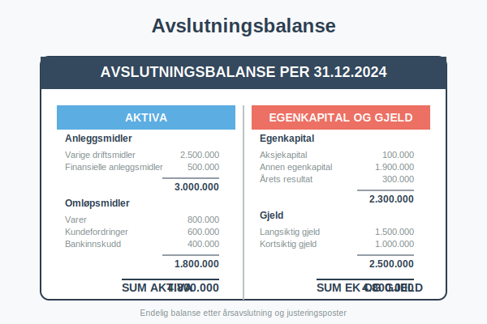
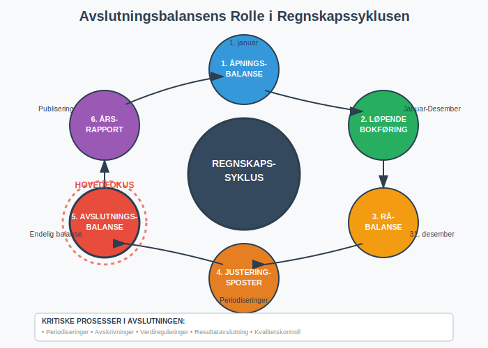
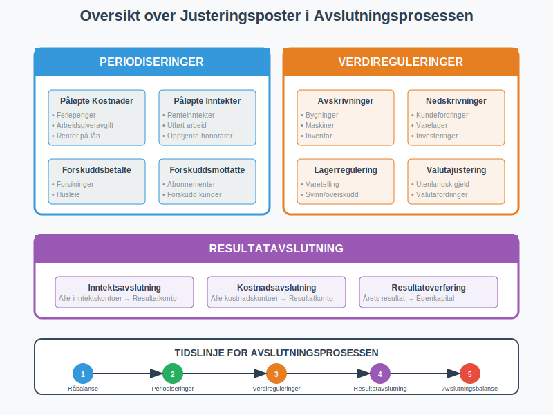
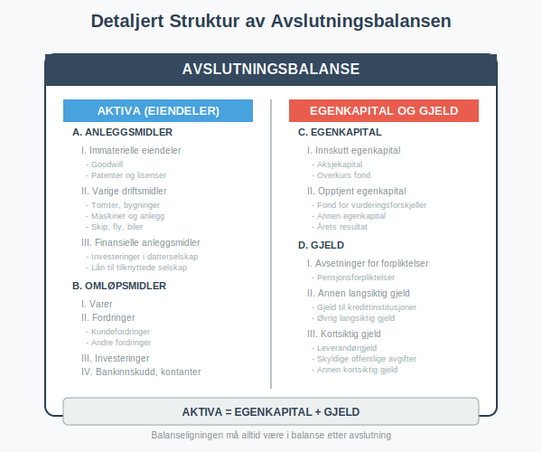
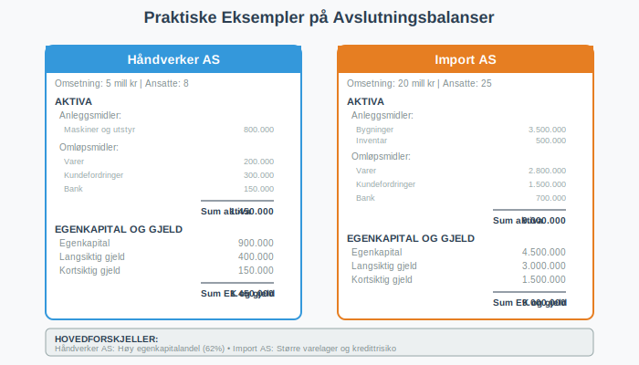
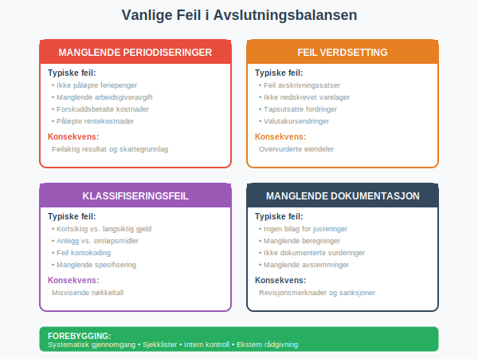

En avslutningsbalanse er den endelige balansen som viser et selskaps finansielle stilling ved slutten av et regnskapsår. Dette er balansen etter at alle transaksjoner er registrert, justeringsposter er ført, og årsavslutningsprosessen er fullført.

Hva er en Avslutningsbalanse?
Avslutningsbalansen representerer selskapets endelige finansielle posisjon på balansedagen og danner grunnlaget for:
- Årsrapporten: Offisiell rapportering til interessenter
- Skatteberegning: Grunnlag for skattepliktig resultat og skattemelding
- Inngående balanse: Startpunkt for neste regnskapsår (avslutningsbalansens utgående balanse blir neste års inngående balanse)
- Kreditorvurdering: Vurdering av selskapets soliditet
- Investorbeslutninger: Grunnlag for investeringsvurderinger
Avslutningsbalansen skiller seg fra løpende balanser ved at den inkluderer alle avslutningsjusteringer og periodiseringer som sikrer korrekt periodisering av inntekter og kostnader.

Prosessen for Utarbeidelse av Avslutningsbalanse
1. Råbalanse
Første steg er å utarbeide en råbalanse basert på løpende bokføring:
- Kontosaldoer: Alle kontoer med saldo per balansedagen
- Foreløpige tall: Før justeringsposter og avslutning
- Grunnlag for justering: Identifisering av nødvendige justeringer
2. Justeringsposter
Kritiske justeringer som må foretas:
Periodiseringer:
- Påløpte kostnader: Kostnader som tilhører perioden men ikke er fakturert
- Påløpte inntekter: Inntekter som tilhører perioden men ikke er fakturert
- Forskuddsbetalte kostnader: Kostnader betalt på forskudd for neste periode
- Forskuddsmottatte inntekter: Inntekter mottatt på forskudd for neste periode
Verdireguleringer:
- Avskrivninger: Planmessige avskrivninger på anleggsmidler
- Nedskrivninger: Verdifall på eiendeler
- Oppskrivninger: Verdijusteringer oppover (begrenset)

3. Avslutningsposter
Resultatavslutning:
- Alle inntektskontoer nullstilles mot resultatkonto
- Alle kostnadskontoer nullstilles mot resultatkonto
- Årets resultat overføres til egenkapitalen som utgående balanse
Disposisjoner:
- Utbytte til aksjonærer
- Overføringer til/fra fond
- Avsettinger til fremtidige forpliktelser
Struktur og Innhold i Avslutningsbalansen
Eiendeler (Aktiva)
| Anleggsmidler | Beskrivelse | Eksempel |
|---|---|---|
| Immaterielle eiendeler | Ikke-fysiske eiendeler | Goodwill, patenter, programvare |
| Varige driftsmidler | Fysiske anleggsmidler | Bygninger, maskiner, inventar |
| Finansielle anleggsmidler | Langsiktige investeringer | Aksjer, obligasjoner, lån |
| Omløpsmidler | Beskrivelse | Eksempel |
|---|---|---|
| Varer | Lagerbeholdning | Råvarer, varer under tilvirkning, ferdigvarer |
| Fordringer | Krav på betaling | Kundefordringer, andre fordringer |
| Investeringer | Kortsiktige plasseringer | Markedsbaserte verdipapirer |
| Bankinnskudd | Likvide midler | Kontanter, bankinnskudd |
Egenkapital og Gjeld
| Egenkapital | Beskrivelse | Eksempel |
|---|---|---|
| Innskutt egenkapital | Kapital fra eierne | Aksjekapital, overkurs |
| Opptjent egenkapital | Akkumulert resultat | Annen egenkapital, årets resultat |
| Gjeld | Beskrivelse | Eksempel |
|---|---|---|
| Avsetninger | Usikre forpliktelser | Pensjonsforpliktelser, garantiavsetninger |
| Annen langsiktig gjeld | Gjeld > 1 år | Banklån, obligasjoner |
| Kortsiktig gjeld | Gjeld < 1 år | Leverandørgjeld, skyldige offentlige avgifter |

Forskjeller mellom Inngående Balanse og Avslutningsbalanse
Inngående Balanse
- Tidspunkt: 1. januar (første dag i regnskapsåret)
- Grunnlag: Forrige års avslutningsbalanse
- Justeringer: Kun eventuelle rettelser av feil
- Formål: Startpunkt for ny regnskapsperiode
Avslutningsbalanse
- Tidspunkt: 31. desember (siste dag i regnskapsåret)
- Grunnlag: Løpende bokføring + justeringsposter
- Justeringer: Omfattende periodiseringer og verdireguleringer
- Formål: Endelig rapportering av finansiell stilling
| Aspekt | Inngående Balanse | Avslutningsbalanse |
|---|---|---|
| Kompleksitet | Enkel overføring | Omfattende justeringer |
| Usikkerhet | Lav (kjente tall) | Høyere (estimater og vurderinger) |
| Revisjonsomfang | Begrenset | Omfattende |
| Regulatoriske krav | Minimale | Strenge krav til dokumentasjon |
Juridiske Krav og Standarder
Regnskapsloven
Krav til avslutningsbalanse:
- Rettvisende bilde: Balansen må gi et rettvisende bilde av selskapets stilling
- Forsiktighet: Konservativ verdsetting av eiendeler og gjeld
- Sammenlignbarhet: Konsistent anvendelse av regnskapsprinsipper
- Vesentlighet: Alle vesentlige poster må være inkludert
Regnskapsstandarder
Norsk Regnskapsstandard (NRS):
- Detaljerte krav til klassifisering og verdsetting
- Spesifikke krav til noter og tilleggsopplysninger
- Krav til sammenligningstall fra foregående år
IFRS (for børsnoterte selskaper):
- Internasjonale standarder for regnskapsføring
- Mer detaljerte krav til virkelig verdi-vurderinger
- Omfattende notekrav
Praktiske Eksempler
Eksempel 1: Mindre Aksjeselskap
Selskap: Håndverker AS Omsetning: 5 millioner kr
Viktige avslutningsposter:
Påløpte feriepenger:
Debet: Lønnskostnad 150.000
Kredit: Skyldig feriepenger 150.000
Avskrivning maskiner:
Debet: Avskrivning 200.000
Kredit: Akk. avskrivning 200.000
Periodisering forsikring:
Debet: Forskuddsbetalt 25.000
Kredit: Forsikringskostnad 25.000
Eksempel 2: Handelsbedrift
Selskap: Import AS Omsetning: 20 millioner kr
Spesielle vurderinger:
- Varelageret: Verdsetting til laveste av kost og netto realisasjonsverdi
- Kundefordringer: Vurdering av tapsutsatte fordringer
- Valutaeksponering: Omregning av utenlandsk gjeld

Kvalitetssikring og Kontroll
Intern Kontroll
Kontrollaktiviteter:
- Avstemming: Alle balansekontoer avstemmes mot underlag
- Analytisk gjennomgang: Sammenligning med budsjett og foregående år
- Dokumentasjon: All dokumentasjon arkiveres systematisk
- Godkjenning: Formell godkjenning av justeringsposter
Ekstern Revisjon
Revisjonshandlinger:
- Substansrevisjon: Detaljert gjennomgang av vesentlige poster
- Analytiske handlinger: Analyse av nøkkeltall og utviklingstrender
- Bekreftelser: Eksterne bekreftelser fra banker og kunder
- Etterfølgende hendelser: Vurdering av hendelser etter balansedagen
Digitalisering og Moderne Verktøy
Regnskapssystemer
Automatiserte prosesser:
- Periodiseringer: Automatisk beregning av påløpte poster
- Avskrivninger: Automatiske avskrivningsberegninger
- Valutaomregning: Automatisk omregning til balansedagskurs
- Rapportgenerering: Automatisk generering av balanserapporter
Kunstig Intelligens
AI-støttede funksjoner:
- Anomalideteksjon: Identifisering av uvanlige transaksjoner
- Prediktiv analyse: Forventet utvikling av nøkkeltall
- Automatisk kategorisering: Intelligent klassifisering av transaksjoner
Vanlige Feil og Fallgruver
Typiske Feil
- Manglende periodiseringer: Ikke registrerte påløpte poster
- Feil verdsetting: Ikke-korrekt verdsetting av eiendeler
- Klassifiseringsfeil: Feil plassering av poster i balansen
- Manglende dokumentasjon: Utilstrekkelig dokumentasjon av vurderinger
Konsekvenser av Feil
- Feilaktig resultat: Påvirker årets resultat og skattegrunnlag
- Kreditorrisiko: Feilaktig fremstilling av selskapets soliditet
- Regulatoriske sanksjoner: Bøter og andre sanksjoner fra myndigheter
- Omdømmeskade: Tap av tillit fra interessenter

Bruk av Avslutningsbalansen
For Ledelsen
- Strategiske beslutninger: Grunnlag for fremtidige investeringer
- Finansiering: Vurdering av finansieringsbehov
- Risikostyring: Identifisering av finansielle risikoer
- Prestasjonsmåling: Evaluering av selskapets prestasjoner
For Investorer
- Investeringsbeslutninger: Vurdering av investeringsmuligheter
- Verdsetting: Grunnlag for verdsetting av selskapet
- Risikoevaluering: Vurdering av investeringsrisiko
- Sammenligning: Sammenligning med andre selskaper
For Kreditorer
- Kredittvurdering: Vurdering av selskapets kredittverdighet
- Sikkerhet: Vurdering av sikkerhet for lån
- Overvåking: Løpende overvåking av låntakers finansielle helse
- Covenant-testing: Kontroll av lånevilkår
Nøkkeltall fra Avslutningsbalansen
Soliditetstall
- Egenkapitalandel: Egenkapital / Sum eiendeler
- Gjeldsgrad: Total gjeld / Egenkapital
- Rentedekningsgrad: Driftsresultat / Rentekostnader
Likviditetstall
- Likviditetsgrad 1: Omløpsmidler / Kortsiktig gjeld
- Likviditetsgrad 2: (Omløpsmidler - Varer) / Kortsiktig gjeld
- Arbeidskapital: Omløpsmidler - Kortsiktig gjeld
Lønnsomhetstall
- Totalkapitalrentabilitet: (Resultat + Rentekostnader) / Gjennomsnittlig totalkapital
- Egenkapitalrentabilitet: Årets resultat / Gjennomsnittlig egenkapital

Fremtidige Utviklingstrender
Teknologiske Endringer
- Sanntidsrapportering: Kontinuerlig oppdatering av balanseinformasjon
- Blockchain: Økt transparens og sporbarhet
- Automatisering: Redusert manuelt arbeid i avslutningsprosessen
Regulatoriske Endringer
- Økt digitalisering: Krav til elektronisk rapportering
- Bærekraftsrapportering: Integrering av ESG-faktorer
- Internasjonalisering: Harmonisering av regnskapsstandarder
Relaterte Begreper
For å forstå avslutningsbalanse fullt ut, bør du også sette deg inn i:
- Aktiva - Eiendelssiden av balansen
- Anleggsmidler - Langsiktige eiendeler i balansen
- Avskrivning - Viktig justeringspost i avslutningen
- Aksjekapital - Del av egenkapitalen i balansen
- Regnskap - Det overordnede regnskapssystemet